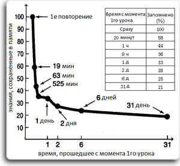

В ваших руках универсальный инструмент, который поможет вам в изучении иностранных языков. С его помощью Вы сможете переводить незнакомый текст и даже живую человеческую речь, слушать произношение перевода текста, вести словарь незнакомых слов и более эффективно изучать их, специально разработанные упражнения сделают процесс обучения интересным и плодотворным. Вы сможете пополнять свой словарный запас, тренировать произношение и правописание, а специальная система повторений разработанная на основе кривой забывания Г.Эббингауза не даст вам забыть выученную информацию и сделает процесс запоминания незнакомых слов на много быстрее.
Вводите/выделяйте любые предложения/фразы/слова, которые Вы хотели бы перевести и получайте мгновенный перевод.
Используйте систему работы с голосом для быстрого набора текста и перевода устной речи.
Последние разработки в этой области позволяют наконец сделать распознание и синтез речи действительно качественным, приносящим пользу, а не раздражение от бесконечного числа ошибок.
Слушайте произношение носителей языка для перевода текста
Создавайте словари незнакомых иностранных слов для их изучения. Вы сможете добавлять слова вручную, парсить интернет страницы или же просто диктовать текст, который при помощи системы распознавания речи станет доступен для редактирования. Все очень удобно и просто.
Пополняйте свой словарный запас, тренируйте произношение и правописание при помощи специальных упражнений.
Для свободного владения иностранным языком одного только устного общения мало. Правописание очень важно при изучении языка. Для улучшения правописания слов в iStudyWords разработана серия упражнений которые делают процесс обучения интересным и эффективным.
Следите за результатами своего труда. По результатам пройденных тестов, Вы всегда сможете посмотреть статистику успеваемости и, при необходимости, подучить сложные слова.
Обучайтесь с умом! Осмысленное запоминания в 9 раз быстрее зазубривания. Система повторений основанная на кривой забывания Эббингауза позволит запоминать иностранные слова с минимально возможной тратой сил и времени и помнить более 95% изучаемой информации через год после начала обучения.
В психологии существует понятие spacing effect – эффекта, заключающегося в том, что информация запоминается лучше не тогда, когда она усиленно учится в какой-то короткий промежуток времени, а когда учится без лишних усилий, но в весьма отдаленные друг от друга периоды. Одним словом, лучше немного поучить сейчас и потом повторить через какое-то время, нежели пытаться все запомнить сразу. Существуют научные исследования, которые позволяют вычислять оптимальные интервалы между повторениями. Суть их в том, что сразу же после повторения слов вы тут же начинаете их забывать, и чем меньше вы работали со словами изначально, тем быстрее спадает эта кривая.
Подобные алгоритмы, как правило, имеют вполне серьезную научную базу и проверяются на большой аудитории людей на предмет эффективности. Всю эту теорию и алгоритмы мы используем в iStudyWords, чтобы облегчить вам жизнь и помочь учить слова эффективно.